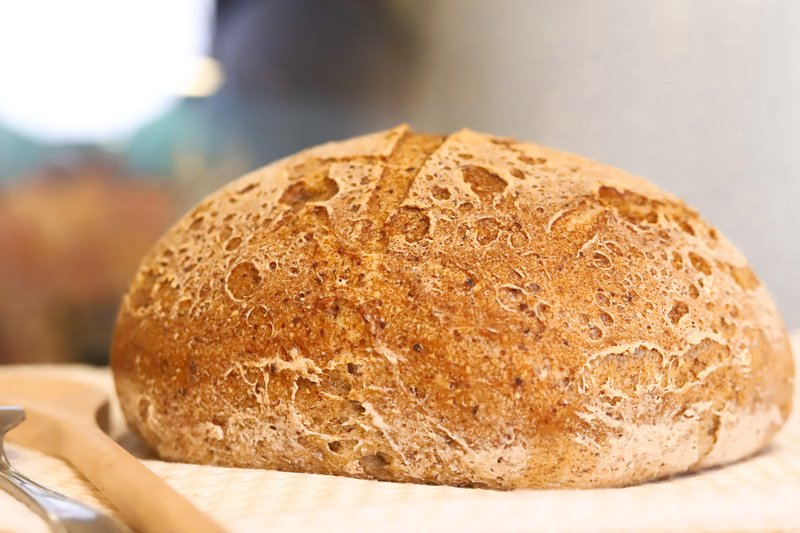
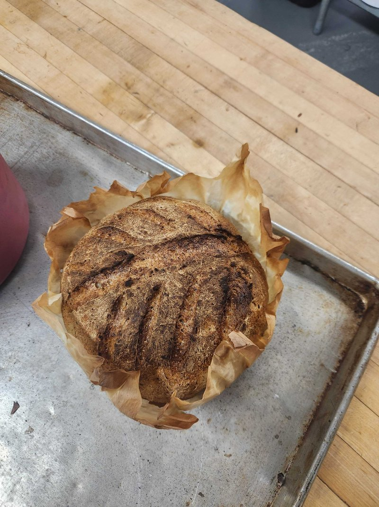

The Best Gluten-Free Sourdough Bread
Gluten-Free bread isn’t as difficult as you think — you just can’t treat it like wheat bread. Tried and true recipe from a professional gluten-free bakery kitchen.
Skip to recipe ↓I’ve been baking professionally for over 20 years, and I run NYC’s largest gluten-free and vegan commercial bakery. So when I say most gluten-free sourdough recipes online are setting you up to fail, I’m not being dramatic. I’m telling you what I see.
Why Gluten-Free Sourdough Is Different
In wheat sourdough, you develop a gluten network through kneading and folding. That network traps the gas from fermentation, which is what gives you rise, chew, and that classic open crumb.
Gluten-free flour has no gluten, obviously. So we have to engineer structure through psyllium husk, which forms a viscoelastic gel that mimics gluten elasticity, and through starch gelatinization, which sets the crumb during the bake.
What this means in practice is no kneading, no stretch and folds, no double proof, and a longer cool time.

The Three Things That Make or Break This Bread
Before I get into the recipe, these are the three things that matter more than anything else:
- Use a peaked starter. Feed it the night before. Use it when it’s domed, bubbly, and smells tangy and yeasty. If your starter has been sitting in the fridge unfed for a week, it’s not going to give you a good rise. A tired starter gives you a brick.
- Gel your psyllium husk first. Hydrate it separately with water before it goes into the dough. If you skip this, the psyllium will keep absorbing water during the proof, and your bread will come out dry.
- Super hot oven, super hot Dutch oven — and for crying out loud, wait 2 to 3 hours before you slice into it. That’s how you get classic sourdough crust. If you cut early while the crumb is still setting, you’ll get a gooey mess and think you failed. You didn’t fail. You cut too early.
Troubleshooting
- Gummy crumb: Under-baked, cut too early, or your psyllium wasn’t fully hydrated.
- Dense, flat loaf: Starter wasn’t peaked, or you over-proofed.
- Flying crust (big air gap between crust and crumb): Surface set before the inside finished rising, or psyllium formed a skin during bake.
- Pale crust: Drop the second-stage temp slightly and extend the time, or brush with plant milk before the uncovered bake.
- Too sour or too mild: Longer cold retard for more sour. Shorter retard with a younger starter for milder.
Weigh everything. Cup measurements don’t work for gluten-free baking. If you don’t have a scale, get one — it’s the single best $15 you’ll spend on baking.
Gluten-Free Sourdough Bread

Equipment:
- Digital kitchen scale
- Mixing bowls (glass is helpful for watching the proof)
- Spatula or dough whisk
- Bench scraper
- Parchment paper
- Lame or sharp knife (for scoring)
- Dutch oven with lid
- Instant-read thermometer
- Wire cooling rack
Ingredients:
- 280g Potato starch
- 174g Brown rice flour
- 100g Oat flour
- 200g Tapioca flour
- 54g Flax seed
- 16g Psyllium husk, ground (2 tbsp)
- 3g Xanthan gum (1 tsp)
- 9g Salt (2 tsp)
- 180g GF sourdough starter (active, peaked)
- 630g Water
- 20g Olive oil
Steps:
- Hydrate the psyllium. Mix psyllium husk with water separately and let it sit until it forms a gel. If the psyllium isn’t fully hydrated when it goes into the dough, it’ll keep absorbing water during proof, and your bread will come out dry.
- Mix everything. Combine flours, psyllium gel, starter, salt, and oil and mix until uniform. You’re just mixing, not kneading or stretching and folding. The dough will look like a thick, scoopable batter, not like wheat bread dough.
- Proof. I proof in a warm oven. Turn it on for about a minute, then off — you want it just barely warm to the touch, around 80°F. Cover the dough with plastic wrap and let it sit for 4 to 6 hours, until it’s nearly doubled. When you start out, it’s easiest to use a glass bowl so you can see the bubbles through the side. Once you’ve got the hang of it, proof straight in your Dutch oven.
- Shape and score. Wet your hands. Use a bench scraper to release the dough. Tuck it into a rough round on a piece of parchment paper — the parchment is your handle for transferring into a hot Dutch oven later. Score shallow, about ¼ inch deep. GF doesn’t have much oven spring, so scoring is mostly decorative.
- Bake. Preheat your Dutch oven inside the oven at 500°F for at least 45 minutes. It needs to be ripping hot — that’s where your crust comes from. Bake covered at 500°F for 25 minutes. Then drop to 450°F, lid off, and bake another 25 to 30 minutes. Internal temp should hit 205 to 210°F.
- Cool. Transfer to a wire rack and walk away. Minimum 2 hours. I know it smells incredible. Walk away.
A Final Note
This bread takes a day. It’s not a quick recipe. But once you’ve made it a few times, the actual hands-on work is maybe 20 minutes total.
If you’ve been frustrated with gluten-free sourdough, it’s almost certainly one of the three things I mentioned at the top. Peaked starter. Gel your psyllium. Hot oven, full cool. Get those right, and you’re 90% of the way there.
Watch the full video for the visual walk-through. And if you make this, tag me — I want to see it.

Need a peaked starter?
Skip the weeks long grind of building a starter from scratch. Our gluten-free starter ships alive and ready to feed.
Shop starters at Sensible →